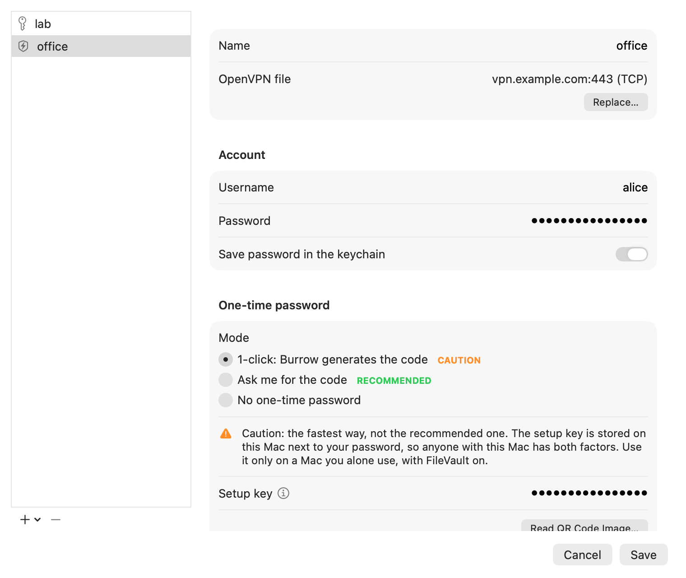
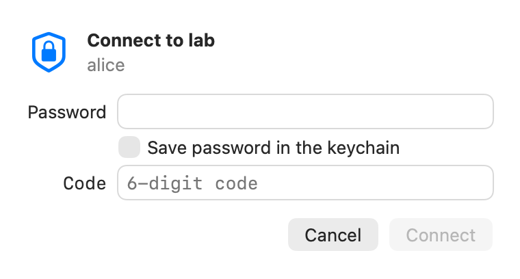

One-time passwords
The code, typed for you
Give Burrow your authenticator's setup key, or a picture of its QR code, and it computes the same six digits as your phone. One click on the power button sends your password and the current code together.
Every sign-in gets a fresh code. A code is never sent twice: with less than three seconds left, Burrow waits for the next one and counts down. If the server says no, it tries once more, then stops, so a typo can't lock your account.
Rather keep two real factors? Choose Ask me for the code: a small window takes the code
from your phone. It's the recommended mode, and the one new configurations start with.

